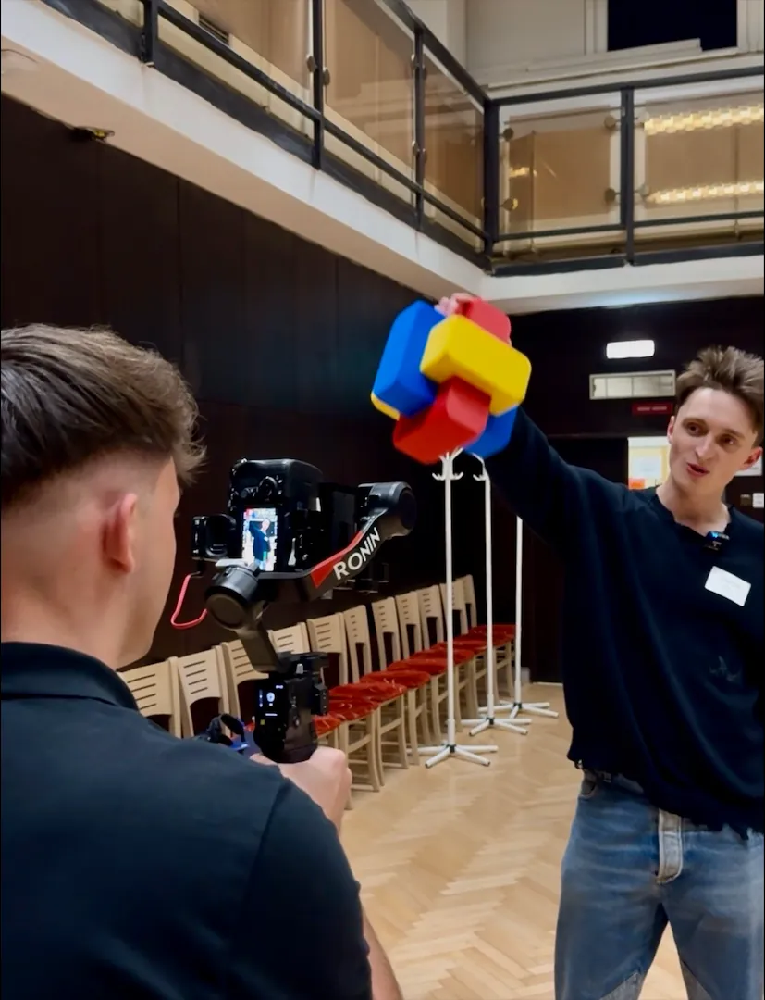

Hlavní služba · dlouhodobě
Videozpravodaje
Pravidelný video formát o tom, co se v obci děje: investice, rekonstrukce, rozhodnutí zastupitelstva, akce a lidé. Každý díl má stejnou grafickou podobu, takže ho občané okamžitě poznají.
Video si pustí i ti, kdo tištěný zpravodaj nečtou.
Měsíční balíček pro obce